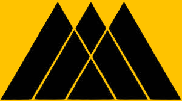
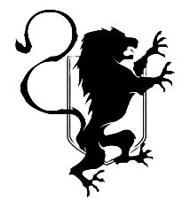
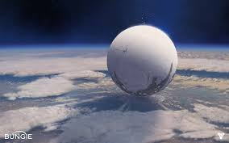

Each class
what does it mean to be a Warlock
being a scholar and warrior who uses knowledge of the Light and the Traveler to wield powerful, often magic-like, abilities

what is it to be a hunter
to embody the spirit of a lone wolf or a master of the shadows, using stealth, agility, and precise combat to outsmart and outgun enemies
 what does t mean to be a Titan
to be a protector and a frontline warrior, defined by strength, sacrifice, and durability. Titans are the City's defenders, known for their heavy armor, resilience
the Guardian tenats
By the speaker
|
Devotion
Bravery
Sacrifice
Death
Devotions inspires Bravery,
Bravery inspires Sacrifice.
Sacrifice leads to Death. |
| |
|---|
these are the tenats each Guardian lives by
The Travler

The Traveler is one of the most mysterious and central entities in the Destiny universe. It is a colossal, spherical being of unknown origin that serves as the source of the Light — a cosmic force of creation, life, and hope. The Traveler’s arrival on planets has historically led to periods of extraordinary growth and technological advancement, known as Golden Ages.
However, wherever the Traveler goes, its ancient nemesis — the Darkness — follows. The ongoing conflict